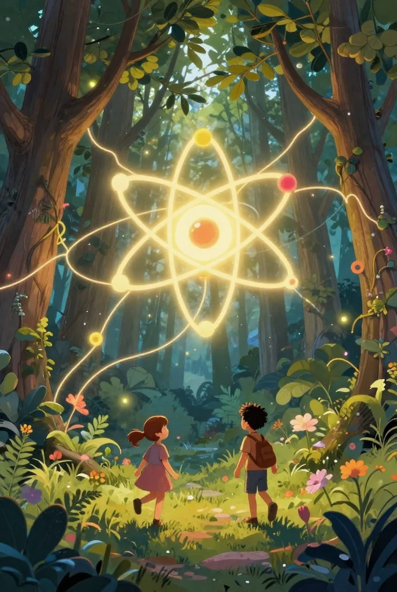
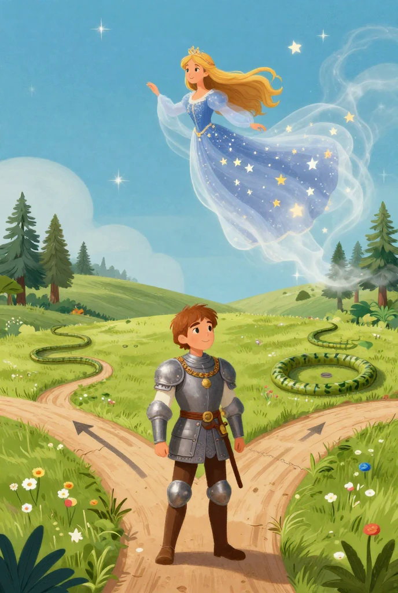
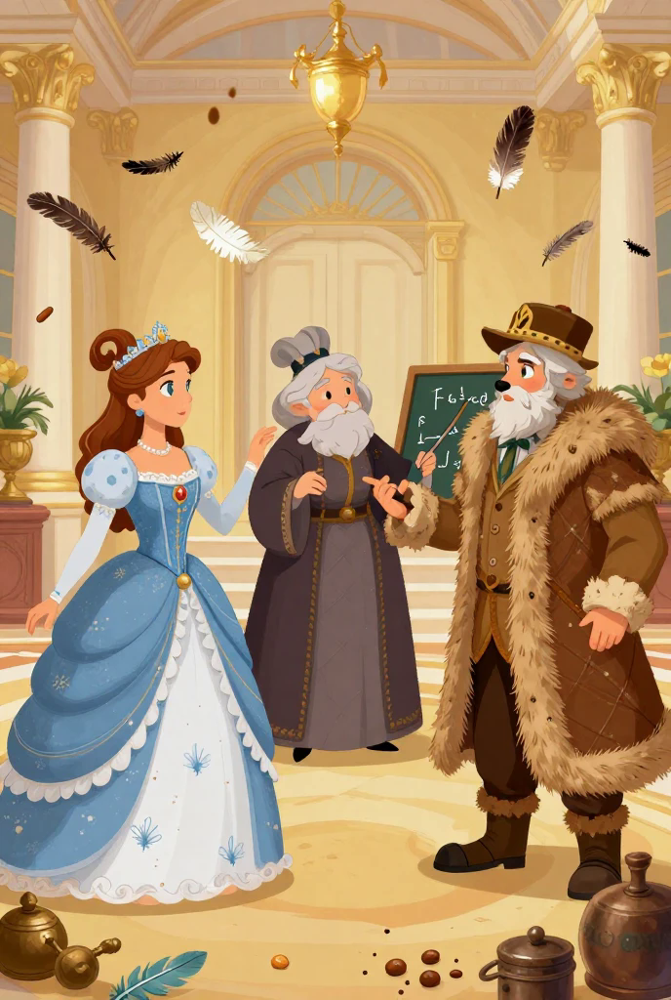
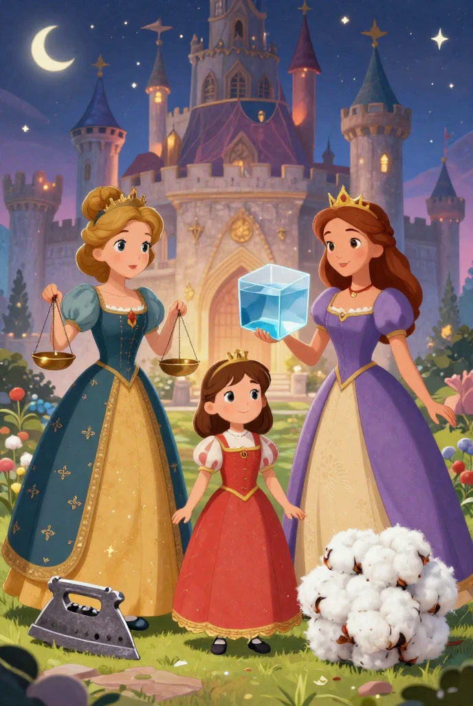
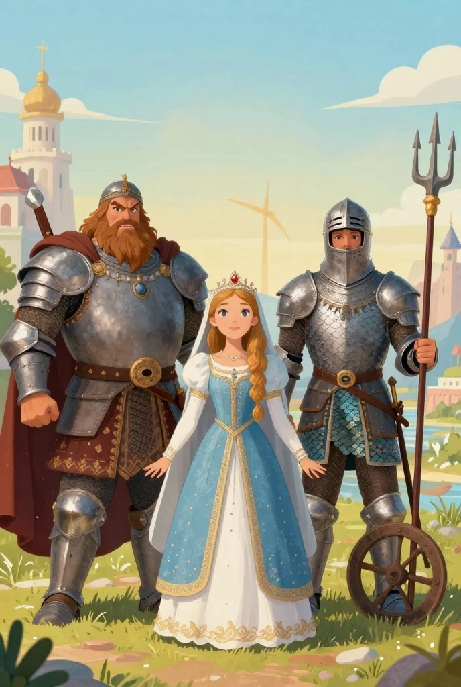
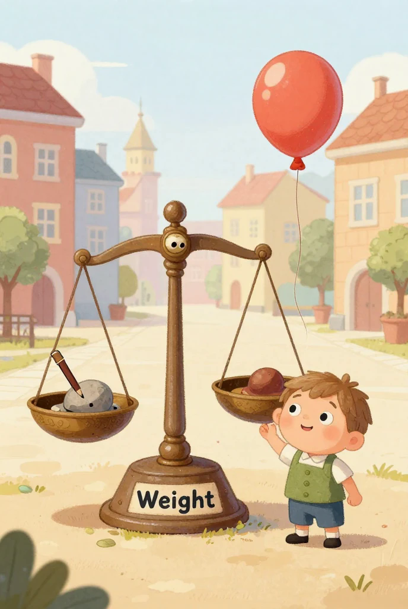
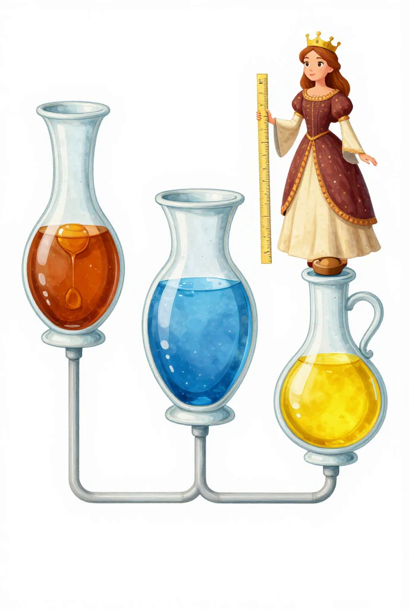
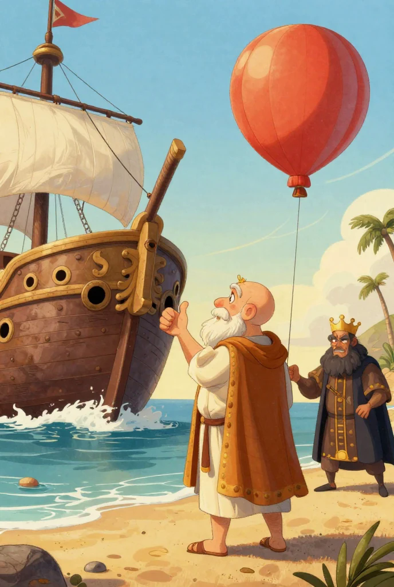
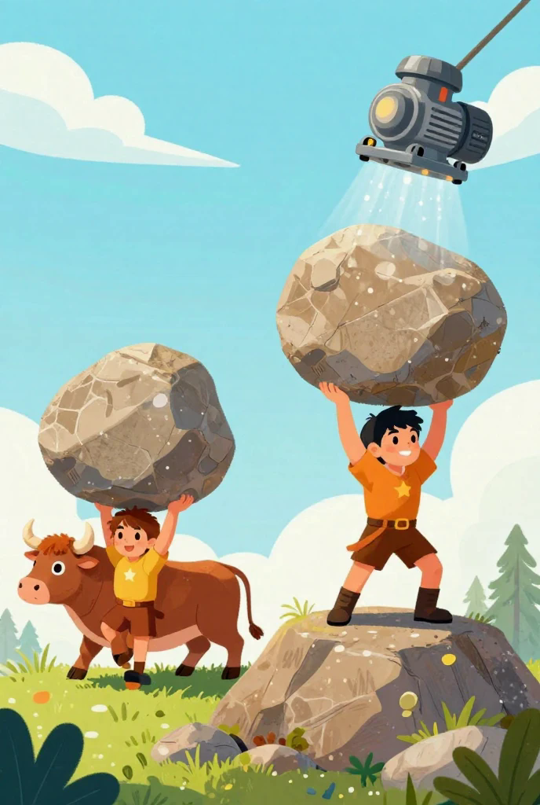
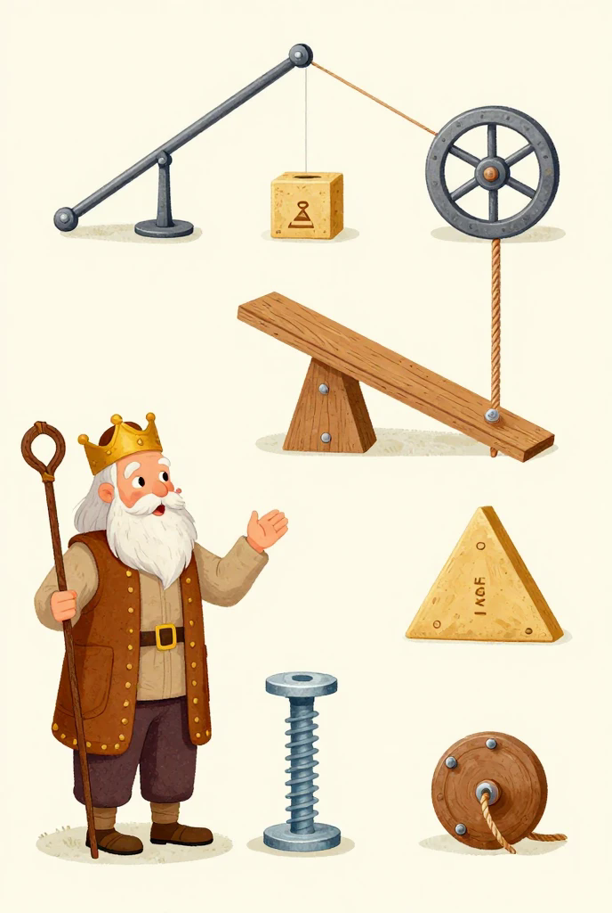

Физика в сказках

Дорогой друг!
Ты держишь в руках необычную книгу. На первый взгляд это сборник волшебных историй — о царевнах и боярынях, о морских царях и воздушных путешественниках, о братьях-богатырях и мудрых изобретателях. Но если присмотреться, за каждой сказкой скрывается нечто удивительное: законы, по которым на самом деле живёт наш мир.
Знаешь ли ты, почему не тонет железный корабль? Отчего тяжёлый камень легче поднять с помощью длинной палки? Куда исчезает энергия, когда мяч перестаёт прыгать? И кто такая эта загадочная Инерция, которую вечно путают с Инертностью?
В обычных учебниках об этом написано скучными формулами и строгими правилами. А в нашей книге физические явления оживают, спорят друг с другом, ищут дружбы и совершают открытия. Здесь инерция предстаёт перед тобой в образе гордой царевны, Архимедова сила помогает царю Гравитону, а простые механизмы оказываются верными помощниками.
Зачем мы это сделали? Затем, что физика — это вовсе не сухая наука. Это волшебство, которое всегда с тобой. Когда ты бежишь — работает кинетическая энергия. Когда стоишь на лестнице — в тебе прячется энергия потенциальная. Когда открываешь дверь — пользуешься рычагом. Просто ты об этом не задумывался.
Приятного тебе путешествия в мир, где формулы превращаются в образы, а законы — в живых героев. И помни: физика — это сказка, которая случилась на самом деле.
Сказка о строении вещества
Или как король Атом и королева Молекула построили три царства
В невидимом мире, который живёт внутри каждого камня, каждой капли воды и каждого облачка пара, правили король Атом и королева Молекула. Самих их нельзя было увидеть даже в самый сильный микроскоп — до того малы. Но именно они и их подданные создавали всё вокруг: твёрдые скалы, текучие реки и прозрачный воздух.
Король Атом был самым маленьким, но самым сильным. Он говорил: «Я — кирпичик, из которого построено всё на свете». А королева Молекула улыбалась и добавляла: «А я — когда два или больше атомов возьмутся за руки. Я частица, но всё же побольше мужа. Вместе мы — семья».
У них были несметные полчища подданных — тоже атомов и молекул. И все эти частицы непрерывно двигались, плясали, дрожали и перелетали. Никто никогда не замирал ни на мгновение, даже в самой холодной льдине.
И вот однажды король Атом и королева Молекула решили разделить свои владения на три царства — по тому, как ведут себя их подданные.
Царство Твёрдое
Первым они создали царство Твёрдое. Здесь подданные — молекулы и атомы — жили тесной дружной толпой. Расстояния между ними были крошечными, а силы притяжения — огромными. Каждая частица держала соседа за руки и даже не думала отпускать.
— Мы словно солдаты в строю! — кричали они. — У каждого своего места. Мы можем только дрожать на месте, но не можем перепрыгнуть к соседу.
И правда: твёрдые тела сохраняли свою форму. Камень оставался камнем, железо — железом. Их нельзя было разлить, как воду. Только если сильно нагреть — тогда частицы начинали злиться, дрожать сильнее и… переходили в другое царство.
— Это мы называем плавлением, — важно сказал король Атом.
Царство Жидкое
Вторым появилось царство Жидкое. Здесь частицы тоже держались друг за друга, но уже не так крепко. Расстояния между ними были чуть побольше, и силы притяжения ослабли.
— Мы, как стайка рыбок! — веселились молекулы воды. — Можем перетекать, переползать с места на место. Но всё равно не разлетаемся в разные стороны — невидимые ниточки нас удерживают.
Поэтому жидкость течёт, принимает форму сосуда, но не разлетается брызгами, если её не трясти. Её можно перелить, разлить, но она всегда остаётся жидкостью — пока не нагреешь так, что частицы окончательно разбегутся.
— А это называется парообразованием, — добавила королева Молекула.
Царство Газообразное
Третьим и самым буйным было царство Газообразное. Здесь подданные потеряли всякую дисциплину. Расстояния между ними стали огромными, силы притяжения почти исчезли. Частицы носились как угорелые: туда-сюда, вверх-вниз, сталкивались, отлетали, снова мчались.
— Мы свободны! — кричали газовые молекулы. — Нам тесно в любом сосуде! Мы заполним весь объём, который дадите. От нас не спрятаться — мы везде!
И правда: если открыть духи в углу комнаты, через минуту запах почувствуют в противоположном углу. Это газовые молекулы разбежались во все стороны.
Пустоты и вездесущие
— Но как же вы все умещаетесь? — спросил бы внимательный слушатель. — Если вещество состоит из частиц, значит, между ними есть пустое место?
— Конечно! — рассмеялся король Атом. — В любом теле больше пустоты, чем самих частиц. Просто они так малы, что нам, людям, кажется, будто вещество сплошное. Сожми пружину — и частицы сблизятся, пустоты станет меньше. Растяни — разойдутся.
В доказательство король приказал смешать спирт с водой. Взяли 100 мл спирта и 100 мл воды — а получилось всего 198 мл. Два миллилитра исчезли! Куда? Молекулы спирта поместились в пустоты между молекулами воды. Вот так-то.
Вечное движение
Но самое главное, что запомнили подданные: они никогда не стоят на месте. Даже в самой холодной льдинке молекулы дрожат. Просто чем холоднее, тем медленнее. А при абсолютном нуле — минус 273 градуса — они бы остановились. Но такого холода во всей Вселенной никто не видел.
— Двигаемся вечно! — хором кричали частицы. — И вы, люди, тоже из нас состоите. А значит, и в вас — вечное движение!
Завет короля
Перед тем как закончить сказку, король Атом и королева Молекула собрали всех подданных и сказали:
— Запомните три главных правила строения вещества:
1. Все вещества состоят из мельчайших частиц — атомов и молекул. Между ними есть промежутки.
2. Эти частицы непрерывно движутся. Чем выше температура, тем быстрее движение.
3. Частицы взаимодействуют друг с другом: притягиваются на расстоянии, но отталкиваются, если сблизить слишком сильно.
И с тех пор каждый школьник, изучающий физику, знает:
стоит посмотреть на обычный стакан воды —
а там целая вселенная из невидимых пляшущих молекул,
которые подчиняются сказочным, но очень точным законам.
А кто эти законы запомнит —
тому любое вещество станет понятным, как родная книга.
Сказка о механическом движении
Или как царевич Тело искал свою невесту Относительность
В некотором царстве, в некотором государстве, которое называлось Пространство-да-Время, жил молодой царевич по имени Тело. Был он не простой — мог двигаться, менять своё положение относительно других тел и тем самым совершать механическое движение.
— Я — движущееся тело! — гордо заявлял царевич. — И моё призвание — менять своё место с течением времени.
Но вот беда: царевич никак не мог понять, как же его измерить, как описать, как поймать за хвост это самое движение. И отправился он в путь искать мудрецов, которые помогли бы ему разобраться.

Встреча с госпожой Траекторией
Первой повстречал царевич важную даму в длинном платье, которое оставляло за ней замысловатый след.
— Я — госпожа Траектория, — представилась она. — Я показываю, по какой линии движется тело. Если ты летишь по прямой — я прямая. Если падаешь камнем в реку — я дуга. Если мчишься по кругу — я окружность. Запомни: траектория — это след, который оставляет движущееся тело.
— А если я не оставляю следа? — спросил царевич. — Например, птица в небе?
— Всё равно линия есть, просто невидимая. Можешь нарисовать её в воображении.
Поблагодарил царевич Траекторию и пошёл дальше.
Встреча с братьями Путём и Перемещением
Вскоре на развилке дорог он увидел двух братьев, которые о чём-то спорили.
— Я — Путь! — говорил один. — Я измеряю, какую длину прошло тело по своей траектории. Всё — от старта до финиша, даже если петляло. Я обозначаюсь буквой L или S и измеряюсь в метрах. Я — скалярная величина, у меня нет направления, только длина!
— А я — Перемещение! — возражал второй. — Я провожу прямую линию от начальной точки до конечной. Мне важно не как ты шёл, а куда в итоге попал. У меня есть и длина, и направление. Я — вектор!
Царевич задумался и решил проверить их на себе.
— Смотрите, — сказал он. — Я вышел из дома, обошёл вокруг озера и вернулся обратно. Путь мой — вся длина берега, скажем, 5 километров. А перемещение — ноль, потому что я вернулся туда же, откуда ушёл.
— Верно! — обрадовался Путь. — Я большой, а братец Перемещение — ноль. Вот так!
— Но если я пройду прямо от дома до школы через поле, — продолжил царевич, — то мой Путь и Перемещение совпадут по длине. Только у Пути нет направления, а у Перемещения есть — из дома в школу.
Братья помирились и решили служить царевичу вместе.
Встреча со скоростью
Дальше царевич набрел на быструю девицу, которая всё время куда-то бежала.
— Я — Скорость! — прокричала она на бегу. — Покажу, как быстро меняется положение тела со временем. Есть у меня две сестры — средняя и мгновенная. Средняя говорит: раздели весь путь на всё время — и получишь меня. А мгновенная показывает скорость прямо в эту секунду — спидометром её меряют.
— А куда ты направляешься? — спросил царевич.
— Направление моё совпадает с направлением движения! Я — вектор, как и Перемещение. Моя единица — метр в секунду или километр в час. Кстати, если ты будешь двигаться равномерно — я не изменюсь. А если неравномерно — буду то расти, то падать, и появится ещё, моя родственница Ускорение.
— Стой, стой, — замахал руками царевич. — Ускорение — это потом. Расскажи лучше, как меня, Тело, сравнивать с другими телами.
Тут из-за куста вышла прекрасная царевна.
Встреча с царевной Относительностью
— Позволь представиться, — сказала она. — Я — царевна Относительность. И без меня ты, царевич, не поймёшь, движешься ты или нет. Смотри: ты сидишь в поезде. Относительно вагона ты покоишься. А относительно земли и деревьев за окном — мчишься со скоростью 100 км/ч. Так движешься ты или нет?
— И да, и нет? — удивился царевич.
— Именно! — рассмеялась Относительность. — Движение относительно. Нужно всегда указывать, относительно какого тела ты его рассматриваешь. Это тело называют телом отсчёта. Прибавь к нему систему координат и часы — получишь систему отсчёта. Вот тогда движение становится определённым.
Царевич влюбился в царевну с первого взгляда. Вместе они объехали всё царство, и везде Относительность помогала ему не путаться.
— Запомни, — говорила она, — одно и то же тело может одновременно двигаться относительно одного предмета и покоиться относительно другого. Пассажир идёт по вагону: относительно вагона — движется, относительно земли — движется быстрее или медленнее поезда, а относительно другого пассажира — может покоиться, если идут рядом.
Главная формула
На прощание царевна Относительность и царевич Тело вывели для людей простую формулу равномерного движения:
Скорость = Путь / Время
v = S / t
А для неравномерного движения придумали среднюю скорость — весь путь делить на всё время.
— А если я хочу узнать, где я буду через какое-то время? — спросил царевич.
— Тогда: Путь = Скорость × Время. Или S = v·t. А для перемещения — та же формула, только со стрелочками (векторами).
Жили они долго и счастливо
С тех пор царевич Тело и царевна Относительность правят в царстве Механического движения. Все тела движутся — кто быстрее, кто медленнее, кто по прямой, кто по кривой. Но без системы отсчёта не понять — движется тело или нет.
«Траектория — наш след,
Путь и перемещение — длина и вектор в ответ.
Скорость — быстрота движения,
Относительность — ключ к пониманию без сомнения.
Выбери тело отсчёта, часы и координаты —
И опишешь любые движения палаты!»
А кто эту сказку запомнит, тот никогда не скажет «поезд движется», не добавив «относительно вокзала». И будет ему за это от царевны Относительности отдельная благодарность.
Сказка о равномерном и неравномерном движении
Или как два брата-гонца поспорили, кто быстрее
В одном королевстве, которое называлось Физика, жили два брата-гонца. Старшего звали Равномер, а младшего — Неравномер. Отец у них был большой вельможа по имени Движение, а мать — сама Время.
С детства братья отличались друг от друга характером.
Старший, Равномер, был степенным, размеренным и предсказуемым. Он всегда говорил:
— Я люблю порядок. За каждую секунду я прохожу один и тот же путь. Ни больше, ни меньше. Моя скорость никогда не меняется — ни в пути, ни на привалах, потому что привалов у меня нет.
И правда: если Равномер отправлялся в дорогу со скоростью 5 км/ч, то каждый час он проходил ровно 5 километров. Никаких рывков, никаких остановок. Его можно было засечь по часам — минута в минуту.
Младший, Неравномер, был непоседой, выдумщиком и любителем приключений. Он то бежал со всех ног, то останавливался, то полз как черепаха, то снова мчался стрелой.
— Скучно жить одинаково! — восклицал он. — Сегодня я бегу быстро, завтра медленно, послезавтра вообще лежу. Зато интересно!
И вот однажды король Физики призвал братьев и сказал:
— Доставьте мне эту грамоту в соседний город. Расстояние — 120 километров. Кто вернётся первым, того я награжу.
Соревнование
Старший брат Равномер рассчитал: «Если я пойду со скоростью 60 км/ч, то доберусь за 2 часа. И ни минутой больше, ни минутой меньше».
Он сел в свой равномерный экипаж, завёл мотор и покатил по дороге. Спидометр застыл на отметке 60 — ни стрельнуть вверх, ни опуститься. Час — проехал 60 км. Второй час — ещё 60. Ровно через два часа он въехал в город, отдал грамоту и отправился обратно. Общее время в пути туда и обратно составило 4 часа.
А младший брат Неравномер решил действовать иначе. Он придумал: «Я поеду на спортивной машине: сначала разгонюсь до 120 км/ч, потом резко заторможу у каждого столба, потом снова разгонюсь. Будет весело!»
Он выехал. Первые полчаса он разгонялся, потом 10 минут стоял, любуясь пейзажем, потом на одном участке мчался 100 км/ч, на другом полз 30 км/ч из-за ремонта дороги. В итоге до города он добрался не за 2 часа, а за 3 часа. Обратно он вообще решил заехать в гости к другу, потерял ещё час. Вернулся через 7 часов.
Король спросил:
— Ну что, братья, кто победил?
— Я! — сказал Равномер.
— Но я же быстрее ехал на некоторых участках! — возразил Неравномер. — Целых 120 км/ч!
— Ах, Неравномер, — вздохнул король. — Ты не понял главного. Важна не мгновенная скорость на коротком отрезке, а средняя скорость на всём пути. Я посчитал: ты проехал 240 км (туда и обратно) за 7 часов. Твоя средняя скорость — около 34 км/ч. А у Равномера — 60 км/ч. Вот он и быстрее.
Объяснение царевны Физики
Тут во дворец вошла мудрая царевна Физика и сказала:
— Давайте я всё объясню, чтобы никто больше не путался.
Она вывела на доске:
Равномерное движение — это когда тело за любые равные промежутки времени проходит одинаковые пути. Скорость постоянна. Формула: v = const, S = v·t.
Неравномерное движение — это когда тело за равные промежутки времени проходит разные пути. Скорость меняется. Для описания используют среднюю скорость: v_ср = весь путь / всё время.
— Примеры? — спросила царевна. — Пожалуйста.
Равномерное движение встречается редко, но его можно увидеть, например, у эскалатора в метро: ступеньки движутся с постоянной скоростью. Или у космического корабля в открытом космосе, если выключить двигатели — он летит равномерно и прямолинейно.
Неравномерное движение — повсюду: идёт пешеход, едет автобус, летит птица, падает снежинка. Все они то ускоряются, то замедляются. Даже поезд, который идёт «равномерно» по расписанию, на самом деле то разгоняется на выезде со станции, то тормозит на въезде.
Как подружить братьев
— Но ведь моё движение тоже можно описать равномерным приближением? — спросил Неравномер. — Если взять очень маленький промежуток времени, то за него скорость почти не меняется. Так я на каждом крошечном отрезке становлюсь равномерным!
— Верно! — обрадовалась царевна. — Именно так физики и поступают: разбивают неравномерное движение на множество коротких равномерных кусочков. А потом складывают. Это называется методом малых интервалов.
Тогда братья помирились. Равномер согласился, что в природе чистое равномерное движение — это идеализация, удобная для расчётов. А Неравномер признал, что без понятия средней скорости нельзя сравнивать, кто быстрее.
1. При равномерном движении скорость постоянна. Путь = скорость × время.
2. При неравномерном движении скорость меняется. Считают среднюю скорость: весь путь делят на всё время.
3. Мгновенная скорость — это скорость в данный момент времени, как стрелка спидометра.
4. Любое неравномерное движение можно приближённо считать набором равномерных на малых участках.
«Равномер шагает прямо — час за час, километр за километр.
Неравномер петляет браво — то быстрей, то тише, чем ветер.
Но средняя скорость решит спор любой —
Раздели весь путь на всё время с лихвой!»
С тех пор братья не ссорятся, а помогают людям рассчитывать дороги, расписания и даже спортивные рекорды. А вы, когда едете в машине, посмотрите на спидометр: меняется стрелка? Значит, вы — в гостях у Неравномера. Застыла на месте? Сам Равномер вас везёт.
И оба брата верно служат физике.
Сказка о том, как царевна Инерция с боярыней Инертностью поспорили
В тридевятом царстве, Физическом государстве, жили-были два явления: гордая царевна Инерция и степенная боярыня Инертность. Многие путали их меж собой, а они были хоть и родственны, да разными совсем.
Царевна Инерция была девицей своенравной. В её владениях царил один закон: «Тело, которое никто не трогает, не дергает и не тормошит, навеки сохраняет свою скорость — и покой, и движение ровное да прямолинейное».
И правда: катится по полу серебряный шар — и будет катиться вечно, пока кто-нибудь ногой не придержит. Стоит тяжёлый трон в покоях — и стоять ему тысячу лет, пока сила какая не толкнёт. Вот какая была Инерция — хранительница постоянства.
А боярыня Инертность была дама основательная, важная. Она не про скорость ведала, а про норов тел: насколько тело не желает свою скорость менять. Характер её измерялся массой — чем тело массивнее, тем оно «инертнее», то есть упрямее.
— Это я, — говорила боярыня, — не даю легкому пёрышку резво разбежаться. А тяжёлую колесницу, наоборот, не сразу с места сдвинешь. Я — мера лени тела!

Однажды собрались во дворце все жители царства: и пушинки-невесоминки, и тяжёлые гири, и быстрые стрелы, и неповоротливые возы с камнями. И затеяли спор.
— Велика ли честь от тебя, боярыня? — молвила царевна Инерция. — Я — закон всеобщий! Любое тело мою волю чтит: без силы скорость не меняет.
— Эх, царевна, — усмехнулась Инертность. — Закон твой без меня — пустой звук. Попробуй-ка сдвинуть с места сонного медведя и ретивого воробья. Обоим ты приказываешь: «Скорость сохраняйте!» Да только воробей твой и без силы через миг сам вспорхнёт, а медведь лежит — его не прошибешь. Всё от меня, от Инертности: у кого масса больше, тот твоему закону вернее служит!
Призадумалась царевна. А жители царства загалдели. Тут вышла к ним мудрая старуха Физика — вся в формулах, с указателем «СИ» в руках.
— Полно вам ссориться, — молвила она. — Вы — сёстры, хоть и разные. Инерция — явление. Закон о сохранении скорости. А Инертность — свойство тел. Мера того, как сильно тело сопротивляется изменению скорости. И мера эта — масса.
Взяла она мел и на доске начертала:
— Смотрите: Инерция говорит: «Нет силы — скорость не меняется». Инертность говорит: «А насколько трудно эту скорость изменить — это я решаю, и меряют меня в килограммах».
С тех пор перестали ссориться царевна и боярыня. Инерция велела телам хранить скорость, Инертность определяла, насколько ревностно они это делают. И жили они в согласии, и все школьники наконец запомнили:
Инерция — это явление сохранения скорости.
Инертность — это свойство тела, мера которого — масса.
Сказка о плотности вещества
Или как три сестры — Масса, Объём и Плотность — поделили царство
В далёкой стране Веществ, среди гор Кристаллов и рек Растворов, жили три сестры-царевны. Старшую звали Масса, среднюю — Объём, а младшую — Плотность. Долгое время они не могли поделить власть, и каждая считала себя самой главной.
Спор трёх сестёр
— Я — самая важная! — заявляла Масса. — Меня измеряют в килограммах, я показываю, сколько вещества в теле. Без меня нет ни веса, ни инертности. Все весы служат мне!
— Нет, я! — возражал Объём. — Меня меряют в кубических метрах и литрах. Я показываю, сколько места занимает тело. Без меня не построить ни дома, ни корабля. Всё пространство подчиняется мне!
А младшая сестра Плотность молчала. Она была самой скромной и незаметной, но именно она умела мирить старших.
Однажды Масса и Объём поссорились не на шутку. Каждая хотела, чтобы король Физик назначил её главной над всеми веществами.
— Возьмите кусок железа и кусок ваты, — сказала тогда мудрая Плотность. — Пусть ваша Масса будет одинаковой — скажем, по 1 килограмму.
Взяли железную гирю и огромный тюк ваты — оба весили ровно 1 кг.
— А теперь посмотрите на Объём, — продолжила Плотность. — У железа он маленький, у ваты — огромный. Почему? Потому что разные вещества по-разному упаковывают свою массу в объём.
Тут король Физик вышел на крыльцо и произнёс:
— Не ссорьтесь, дочери мои. Вы все нужны, но есть между вами тайная связь. Слушайте:
Плотность = Масса / Объём
— То есть, — объяснил король, — плотность показывает, сколько массы содержится в единице объёма. Если вещество плотное, то в маленьком объёме умещается большая масса. Если рыхлое — масса маленькая, а объём большой.
— Так вот почему железо тяжелее пробки! — воскликнула Масса.
— Так вот почему в литровую банку входит 1 кг воды, но только 0,7 кг бензина! — подхватил Объём.

Царство плотностей
Король Физик повелел составить таблицу плотностей всех веществ. Оказалось, что у каждого вещества своя плотность — как отпечаток пальца.
Вот как расселились вещества по плотности:
- Самые плотные — осмий и платина (почти 22 000 кг/м³). В спичечный коробок такого металла влезет масса, как у взрослого человека!
- Золото и свинец — чуть поменьше, но всё равно тяжеленные.
- Железо — около 7800 кг/м³.
- Алюминий — лёгкий, 2700 кг/м³.
- Вода — 1000 кг/м³. Её сделали эталоном.
- Древесина (пробка, сосна) — меньше 1000, поэтому плавает.
- Воздух — всего 1,2 кг/м³. В тысячу раз легче воды!
Как плотность помогла царевичу
Однажды в царстве случилось несчастье: злой волшебник Подмена подменил золотую корону короля на медную, покрытую позолотой. Никто не мог отличить подделку — на вид как золото.
Тогда позвали младшую царевну Плотность. Она опустила корону в воду и измерила, сколько воды вытеснила корона (это был объём), а потом взвесила её (масса). Вычислила плотность: масса / объём. Получилось не 19 300 кг/м³ (как у золота), а около 8700 — как у меди!
— Ага, — сказала Плотность, — это не золото. Обман раскрыт.
Так царевна спасла королевскую казну и прославилась на всё царство.
Тайная формула
С тех пор три сестры живут в согласии. Любой школьник знает волшебный треугольник: если нужно найти плотность — делишь массу на объём. Если нужно найти массу — умножаешь плотность на объём. Если нужно найти объём — делишь массу на плотность.
«Плотность — это характер вещества:
Сколько граммов уместилось в кубическом сантиметре?
У воды — один, у железа — почти восемь,
У воздуха — тысячная доля, запомнить непросто.
Если тело плотнее воды — оно утонет смело.
А если меньше — плавает, и это его дело!»
Вот и сказке конец, а кто понял плотность — молодец.
Сказка о физических силах
Или как четыре могучих витязя служили царевне Движению
В славном Физическом царстве, среди гор Инерции и рек Энергии, правила прекрасная царевна по имени Движение. Ей служили четыре могучих витязя — четыре силы, без которых не сдвинулось бы ни одно тело на свете. Звали их: Сила Тяжести, Сила Упругости, Сила Трения и Сила Архимеда.
И был у них главный закон: сила — это причина изменения скорости. Что значит: если тело покоилось — сила заставит его двигаться; если двигалось — сила ускорит, замедлит или повернёт. А измеряли все силы в особых единицах — ньютонах, в честь великого мудреца, который разгадал тайны движения.

Первый витязь — Сила Тяжести
Самый суровый и величественный воин звался Силой Тяжести. Он был посланником самого царя Гравитона, владыки всеобщего притяжения.
— Я действую на любое тело, у которого есть масса! — гремел он. — Притягиваю всё к центру Земли. Меня вычисляют по формуле:
F_тяж = m · g
где m — масса, a g — ускорение свободного падения, примерно 10 Н/кг. Благодаря мне яблоки падают с деревьев, камни летят вниз, а вода течёт в реках. Без меня все предметы разлетелись бы в разные стороны, как в невесомости.
— Но как же самолёты и птицы? — спросила царевна. — Они не падают!
— А вот для этого нужен мой брат, Сила Упругости! — ответил витязь.
Второй витязь — Сила Упругости
Второй витязь был гибким и ловким. Он умел сжиматься, растягиваться, изгибаться, но всегда стремился вернуться в исходное положение.
— Я возникаю, когда тело деформируют, — сказал он. — Пружину сжали — я толкаю обратно. Тетиву натянули — я тяну назад. Мост прогнулся под грузовиком — я поднимаю его вверх. Меня вычисляют по закону мудреца Гука:
F_упр = k · Δx
где k — жёсткость, а Δx — величина деформации. Именно я поднимаю самолёты! Крыло прогибается под напором воздуха, а я толкаю его обратно, создавая подъёмную силу. И птицы машут крыльями благодаря мне. И на батуте прыгают — тоже я!
Третий витязь — Сила Трения
Третий витязь был самым хитрым и противоречивым. Его все ругали, но без него не могли обойтись.
— Я — Сила Трения, — проскрипел он. — Я возникаю, когда одно тело скользит по другому или пытается скользить. Бываю двух видов: трение покоя (не даёт сдвинуть тяжёлый шкаф) и трение скольжения (тормозит санки на горке). Меня вычисляют так:
F_тр = µ · N
где µ — коэффициент трения (зависит от материалов), а N — сила давления (часто равна силе тяжести). Меня многие не любят. Из-за меня изнашиваются детали, тратится лишняя энергия, скрипят двери. Но без меня вы не смогли бы ходить — ноги скользили бы, как на льду. Машины не тронулись бы с места — колёса прокручивались бы впустую. Гвозди выскакивали бы из стен. Так что я нужен!
Царевна Движение кивнула: — Верно. Всё хорошо в меру. Там, где надо скользить — мы тебя уменьшаем (смазкой, подшипниками), а где надо держать — увеличиваем (рифлёная подошва, тормозные колодки).
Четвёртый витязь — Сила Архимеда
Четвёртый витязь появился из морской пены, с трезубцем и в чешуе. Это был Сила Архимеда.
— Я действую на любое тело, погружённое в жидкость или газ, — сказал он. — Выталкиваю его вверх. Меня вычисляют так:
F_Арх = ρ_жидкости · g · V_погружённой_части
где ρ — плотность жидкости, V — объём погружённой части тела. Благодаря мне не тонут корабли, плавают рыбы и подводные лодки, поднимаются воздушные шары и дирижабли. Если моя сила больше силы тяжести — тело всплывает. Если меньше — тонет. Если равна — плавает внутри жидкости, как рыбка в аквариуме.
Царевна Движение улыбнулась: — Ты, Архимед, самый добрый из всех. Ты облегчаешь тяжесть в воде и даже в воздухе. Без тебя купание было бы смертельным, а кораблестроение — невозможным.
Великое сражение
Однажды злой колдун Покой наслал на царство заклятие: «Пусть все силы исчезнут! Пусть ничто никуда не движется!»
И началось: тела застыли на месте. Сила Тяжести перестала тянуть — люди повисли в воздухе, чай не наливался в чашку, а всё, что не прибито, разлетелось по углам. Сила Упругости пропала — пружины превратились в прямые проволочки, мячи перестали отскакивать, мосты рухнули. Сила Трения исчезла — ноги разъехались, машины забуксовали, всё начало скользить бесконтрольно. А Сила Архимеда ушла — корабли утонули, шары упали, а рыбы легли на дно.
Царевна Движение закричала: — Остановитесь! Вы нужны все вместе! Только когда силы действуют сообща — возникает порядок. Сила тяжести тянет вниз, сила упругости толкает вверх — и груз висит на верёвке. Сила трения держит колёса на дороге, а сила Архимеда помогает плыть. Нельзя жить без сил!
Четыре витязя собрались, соединили свои мечи (формулы) и разбили заклятие колдуна. С тех пор силы снова служат движению.
Завет царевны
На прощание царевна Движение начертала на камне:
«Сила — причина изменения скорости любой.
Измеряй её в ньютонах, помни, друг мой!
Тяжесть — m на g. Упругость — k на Δx.
Трение — µ на N. Архимед — ρ жидкости на g и V погружённой.
Вместе силы правят миром — и это не обман.
Без них ни шагу, ни полёта, ни движения, ни стран!»
А кто запомнит этих четырёх витязей и их формулы — тот сможет объяснить, почему летит ракета, едет поезд, плывёт корабль и не падает небо. И будет ему в физике удача. Вот и сказке конец, а кто понял силы — молодец.
Сказка о Весе и его волшебных свойствах
В далёкой стране, где горы касались облаков, а реки текли по гладким камням, жил Вес. Он был не просто Весом, а настоящей физической величиной и очень гордился этим. Вес жил на больших старинных весах, которые стояли на главной площади города.
Все жители города — пекари, кузнецы, торговцы — приходили к Весу, чтобы узнать, сколько что весит. Вес объяснял им: — Я показываю, с какой силой предмет давит на опору или растягивает подвес. Я завишу от массы предмета и силы притяжения планеты. На Луне я был бы меньше, а на Юпитере — больше!
Однажды к Весу пришёл любопытный мальчик Петя. Он принёс с собой разные предметы: пушистое пёрышко, тяжёлый камень и воздушный шарик, наполненный гелием.

— Давай проверим, — сказал Вес. — Положи пёрышко на чашу.
Петя положил. Стрелка едва сдвинулась. — Видишь, — объяснил Вес, — у пёрышка маленькая масса, поэтому и я маленький. Я почти не чувствую его давления.
Затем Петя положил камень. Стрелка резко качнулась и показала большое число. — А вот и другое дело! — обрадовался Вес. — У камня большая масса, и сила притяжения Земли действует на него сильнее. Поэтому я такой большой.
Наконец, Петя положил воздушный шарик с гелием. Но вместо того чтобы опуститься, чаша с шариком поднялась вверх! — Что это? — удивился Петя.
— Ах, это интересный случай, — улыбнулся Вес. — Шарик легче воздуха, и выталкивающая сила воздуха сильнее, чем я. Получается, что он не давит на чашу, а как бы «убегает» от неё вверх!
Петя задумался: — Значит, ты не всегда одинаковый?
— Конечно! — ответил Вес. — Я могу меняться: если взять предмет с большей массой — я стану больше; если перенести предмет на другую планету — я изменюсь (на Луне я буду в 6 раз меньше); если предмет находится в воде или воздухе — на меня влияет выталкивающая сила.
Но есть одна величина, которая никогда не меняется — это масса. Она показывает, сколько вещества в предмете. Масса пёрышка всегда одинакова — и на Земле, и на Луне, и в воде. А я, Вес, могу меняться в зависимости от условий.
Петя поблагодарил Веса за урок и побежал домой. По дороге он наблюдал, как падают листья (они имеют небольшой Вес), как тяжело несут мешки грузчики (у мешков большой Вес) и как воздушные шары улетают в небо (их Вес меньше выталкивающей силы воздуха).
Выводы для юных исследователей:
1. Вес — это сила, с которой предмет давит на опору. Он измеряется в ньютонах (Н).
2. Масса — это количество вещества в предмете. Она измеряется в килограммах (кг) и не меняется в зависимости от места.
3. Вес зависит от массы, силы притяжения (на Луне меньше) и среды (вода/воздух).
4. Не путайте Вес и массу! Когда говорят «этот арбуз весит 5 кг», на самом деле имеют в виду его массу. Правильный вариант: «масса арбуза — 5 кг, а его Вес на Земле — примерно 50 Н» (потому что P = m·g, где g ≈ 10 Н/кг).
И по сей день Вес живёт на своих весах и учит детей различать массу и Вес, понимать законы физики и удивляться чудесам окружающего мира.
Сказка о давлении
Или как царевич Паскаль победил великана Шипона
В одном славном Физическом царстве, на границе твёрдых земель и жидких морей, правил царь Давление. Был он невидим, но его власть чувствовал каждый: и тот, кто шёл по снегу, и тот, кто нырял в воду, и тот, кто надувал шары.
Царь Давление имел свой закон, который высекли на камне:
Давление — это сила, делённая на площадь.
p = F / S
— Чем больше сила — тем больше я, — говорил царь. — Чем меньше площадь, на которую эта сила действует, — тем я больше. Вот почему острый нож режет лучше тупого: у острого ножа площадь лезвия мала, и я, давление, становлюсь огромным.
Но не все в царстве понимали этот закон. И тогда царь отправил своего сына, царевича Паскаля, в путешествие, чтобы тот научил подданных мудрости давления.
Битва с великаном Шипоном
Первым делом царевич Паскаль встретил великана по имени Шипон. Тот был огромным, тяжёлым — целых 600 ньютонов веса! — но зато у него были огромные ступни площадью 0,5 м² каждая.
— Ха-ха! — заревел Шипон. — Я такой тяжёлый, что продавлю любую землю! Все будут меня бояться!
— А вот и нет, — улыбнулся Паскаль. — Давай посчитаем твоё давление. Твоя сила тяжести — 600 Н. Площадь двух ступней — 1 м². Значит, твоё давление на землю: p = 600 Н / 1 м² = 600 Па. Всего-то 600 паскалей! Меньше, чем у маленькой девочки на шпильках!
Он позвал девочку Машу. Маша весила 300 Н, но площадь её шпилек была всего 0,002 м² (на двух ногах — 0,004 м²). Её давление: p = 300 Н / 0,004 м² = 75 000 Па — в 125 раз больше, чем у великана!
— Ой, — застонал Шипон, — значит, я не страшен? Меня никто не боится?
— Не боится, зато ты удобен, — сказал Паскаль. — Благодаря твоим широким ступням ты не проваливаешься в снег. А девочка на шпильках — провалится. Вот почему у танков и вездеходов делают широкие гусеницы — чтобы давление было маленьким, и они не тонули в болоте. А у ножей, иголок и когтей — маленькая площадь, чтобы давление было огромным.
Закон Паскаля для жидкостей и газов
Царевич пошёл дальше и пришёл к реке. Там он встретил водяного, который спросил:
— А для воды и воздуха твой закон такой же?
— Не совсем, — ответил Паскаль. — Я открыл особый закон для жидкостей и газов. Слушай:
Давление, производимое на жидкость или газ, передаётся без изменения в каждую точку объёма.
Он взял закрытый шар с множеством отверстий, наполнил его водой и приставил поршень. Когда он надавил на поршень, вода брызнула из всех отверстий одинаково сильно.
— Видишь? — сказал Паскаль. — Я нажал на поршень — и давление передалось во все стороны одинаково. Это и есть закон Паскаля. Благодаря ему работают гидравлические машины: маленьким поршнем создают небольшое давление, а оно передаётся на большой поршень — и поднимает огромный груз.
Атмосферное давление — невидимый великан
Наконец, царевич Паскаль поднялся на высокую гору. Там он встретил старика Торричелли, который сидел со стеклянной трубкой, заполненной ртутью.
— Смотри, царевич, — сказал старик. — Над нами — океан воздуха толщиной в сотни километров. Воздух имеет вес и давит на всё, что находится на Земле. Это атмосферное давление. У подножия горы ртуть в моей трубке поднимается на 760 мм, а на вершине — всего на 700 мм. Потому что наверху воздуха меньше, и давление ниже.
— Значит, — догадался Паскаль, — чем выше подниматься, тем давление падает. А на уровне моря оно примерно 101 325 паскалей — это одна атмосфера.
— Именно! — кивнул Торричелли. — Мы не чувствуем этого давления, потому что внутри нашего тела оно такое же. Но стоит подняться в горы — и уши закладывает. Или вылететь в космос без скафандра — тело разорвёт от внутреннего давления, потому что снаружи давления нет.
Как давление помогает жить
Царевич Паскаль вернулся во дворец и доложил отцу:
— Я понял главное. Давление — это не просто формула. Оно повсюду: шины автомобиля накачаны воздухом — давление воздуха держит машину. Мы пьём через трубочку — когда втягиваем воздух, давление внутри трубочки падает, и атмосферное давление заталкивает жидкость в рот. Присоски держатся — мы выдавливаем воздух из-под присоски, и атмосферное давление прижимает её к стене. Кровь течёт по сосудам — благодаря разности давлений.
«Чтобы меньше давление было —
Площадь опоры увеличивай смело.
А нужно что-то разрезать —
Нож точи, чтоб площадь лезвия уменьшать.
В жидкостях и газах закон Паскаля строг:
Давление во все стороны — один поток.
Атмосфера сверху давит —
Но привыкли мы к тому, и славно!»
Вот и сказке конец, а кто понял давление — молодец.
Сказка о сообщающихся сосудах
Или как три брата-сосуда помирили Воду и Нефть
В подземном царстве, глубоко под землёй, жили три брата-сосуда. Их соединяла общая тайная труба, и они всегда были вместе, но каждый имел свой характер. Старшего звали Правый, среднего — Левый, а младшего — Изогнутый.
Они могли быть разной формы: один — высокий и тонкий, другой — низкий и широкий, третий — кривой, как змея. Но соединялись они всегда в самом низу, словно держались за руки под землёй. И был у них строгий закон, который открыла мудрая царевна Гидростатика:
В сообщающихся сосудах поверхность однородной жидкости устанавливается на одном уровне.

Спор о воде
Налили они в свои сосуды воду. В правом — высоком и узком — вода поднялась высоко. В левом — низком и широком — казалось, что воды мало. А в изогнутом — и вовсе непонятно.
— Смотрите! — закричал Правый. — У меня воды больше! Я главный!
— Нет, у меня! — возразил Левый. — Моя чаша шире, значит, я важнее.
Но тут пришла царевна Гидростатика с линейкой и показала:
— А ну-ка, измерьте высоту уровня воды от общего дна. И правый, и левый, и изогнутый — везде вода стоит на одной высоте. Потому что давление внизу одинаковое, а жидкость одна и та же. Уровни равны — хоть ты тресни!
Братья удивились. Действительно, вода стояла на одной отметке, хотя объёмы в сосудах были разные (в широком — больше, в узком — меньше, но высота одинаковая).
— Так вот почему, — догадался Изогнутый, — в чайнике вода в носике стоит на том же уровне, что и в самом чайнике! И в кофейнике, и в лейке — везде одинаково!
Приключение с разными жидкостями
Однажды в сосуды налили разные жидкости: в правый — воду, в левый — подсолнечное масло, а в изогнутый — мёд. И началась путаница.
— Теперь уровни разные! — закричал Правый. — Почему?
— Потому что вы разные по плотности! — объяснила Гидростатика. — В сообщающихся сосудах высота столба жидкости тем меньше, чем больше её плотность. Взгляните: мёд самый плотный — он стоит ниже всех. Вода — средней плотности — посередине. А масло лёгкое — выше всех.
Она написала формулу:
ρ₁ · g · h₁ = ρ₂ · g · h₂
— То есть, — продолжила она, — во сколько раз одна жидкость плотнее другой, во столько раз её уровень ниже. На этом основано, например, измерение давления жидкостным манометром: по разнице уровней в коленах определяют давление.
Шлюзы и фонтан
Тут братья вспомнили, что в царстве людей есть удивительные сооружения.
— А что такое шлюзы на реках? — спросил Изогнутый.
— Это тоже сообщающиеся сосуды, — ответила Гидростатика. — Когда корабль заходит в шлюзовую камеру, открываются ворота, вода перетекает из верхнего бьефа в нижний, уровни выравниваются, и корабль поднимается или опускается вместе с водой. Без сообщающихся сосудов реки с разными уровнями были бы непроходимы!
И ещё вспомнили про артезианский колодец. Если водоносный слой зажат между двумя непроницаемыми пластами и находится выше уровня земли, то вода сама бьёт фонтаном — потому что уровни в сообщающихся сосудах (водоносный слой и колодец) стремятся выровняться. Получается природный фонтан.
В городе Александрия жил мудрец Герон. Он построил фонтан, который работал без насоса, используя закон сообщающихся сосудов. Вода из верхнего сосуда перетекала в нижний, сжимала воздух, и тот выталкивал воду вверх. — Ха! — сказал Фонтан. — Я выше всех! — Не хвались, — ответил Герон. — Это всё те же сообщающиеся сосуды. Вода ищет покоя, ищет один уровень, а ты — лишь игра сил.
Завет царевны Гидростатики
На прощание царевна собрала всех — и сосуды, и жидкости, и людей — и сказала:
1. Если жидкость однородна и находится в покое, её уровень во всех сообщающихся сосудах одинаков — независимо от формы и ширины сосудов.
2. Если жидкости разные (разной плотности), то высоты столбов обратно пропорциональны плотностям. Более плотная жидкость стоит ниже.
3. Закон работает для любых жидкостей и газов (но газы сжимаемы, поэтому для них сложнее).
«В сообщающихся сосудах — строгий порядок:
Уровень воды един, как на ладони.
Налил в чайник — в носике та же высота,
Шлюз откроешь — выровняются борта.
Если масло поверх воды налить —
Масло выше, это не забыть.
А артезианский колодец бьёт ключом —
Сообщающиеся сосуды здесь ни при чём?
Как раз при чём: вода из пласта под давлением
Ищет выход, чтоб сравняться с заземлением!»
С тех пор люди строят водопроводы, фонтаны, шлюзы и даже кофейники, зная, что всё это — детища сообщающихся сосудов. А кто понял эту сказку — тот никогда не удивится, почему вода в чайнике и носике на одном уровне. Вот и сказке конец, а кто уровни запомнил — молодец.
Сказка о том, как царевич Архимед посрамил царя Гравитона
В подводном царстве, в тридевятом море, жил могучий царь Гидрос. Владел он всеми водами — от лужи до океана. А над ним, в небесных высях, правил царь Аэрий, повелитель ветров и облаков.
И была у них общая беда: назойливый царь Гравитон, владыка всеобщего притяжения. Он норовил всё утянуть книзу — корабли ко дну, птиц на землю, а облака — прямо в грязь.
— Всё под мою власть! — гремел Гравитон. — Нет такой силы, что удержит тяжёлый корабль на воде, а железную птицу — в воздухе!
Но цари Гидрос и Аэрий не стерпели такого самоуправства. Созвали они мудрецов со всего света. Первым явился старый дед Архимед из Сиракуз — такой лысый, с пружинкой и с ванной под мышкой.

— Эх, ваши величества, — сказал Архимед, — да будет вам известно: любое тело, погружённое в жидкость или газ, теряет в весе ровно столько, сколько весит вытесненная им вода или воздух!
И для наглядности залез прямо в царскую купальню. Вода хлынула через край, а Архимед закричал: «Эврика!» — и выскочил нагишом во дворец.
— Смотрите, — говорит, — железный корабль тяжёл, но внутри он пустой. Он вытесняет воды столько, что вода толкает его вверх с силой, которая зовётся Архимедовой. И если эта сила больше веса корабля — не утонет!
Царь Гидрос хлопнул трезубцем: — А ну, позвать моего главного плавуна — каравеллу «Быстрая»!
Приплыла каравелла. Железная, с пушками, а на воде держится — словно утица. Гравитон дует, тянет её ко дну, да куда там! Вода под ней спирается, толкает вверх — стоит себе корабль.
— А что в небе? — спросил царь Аэрий. — У нас шары воздушные летают, да только я не пойму — как?
Тут выступил вперёд юный воздухоплаватель Шарли. Был он легкомыслен, как гелий, и носил шляпу-колпак. — Дедушка Архимед и для воздуха свой закон оставил! — воскликнул Шарли. — Надуваю я свой шар газом легче воздуха, например, тёплым дымом или гелием. Шар вытесняет вокруг себя много воздуха, а воздух толкает его вверх. Сила выталкивания — больше веса шара, вот и летит!
И правда: наполнили огромный шар горячим воздухом от костра. Затрепетал шар, натянул верёвки, да как рванётся ввысь! Гравитон аж за голову схватился — а шар летит себе, ветра обгоняет.
Собрались тогда три царя — Гидрос, Аэрий и Гравитон — на совет.
— Ну что ж, — буркнул Гравитон, — признаю: есть сила, которая меня ослушается. Имя ей — выталкивающая сила Архимеда. Для воды и для воздуха закон один.
С тех пор так и повелось: корабли держатся на воде потому, что их вес меньше веса вытесненной воды. А если перегрузят — здравствуй, дно морское. Шары и дирижабли летают потому, что их вес меньше веса вытесненного воздуха. А если тяжёлый — не летит, лежит на земле и вздыхает.
«Не зная Архимеда — ни плавать, ни летать:
Тяжелее воды — на дно идти опять.
А в шар тёплый воздух впусти —
К облакам скорей лети!»
А кто эту сказку запомнит — тот ни корабль не утопит, ни шар не перегрузит. И Гравитон ему не страшен.
Сказка о двух братьях — Работе и Мощности
В далёкой Механической стране, за горами Трения и реками КПД, жили два брата-богатыря. Старшего звали Работа, а младшего — Мощность. И был у них отец — старый царь Сила, а мать — царица Путь.
С самого детства братья были неразлучны, но характерами разнились.
Старший брат Работа был основательным, неторопливым. Он любил повторять: — Моё дело простое: чтобы я совершился, нужны две вещи — сила, которая толкает, и путь, который проходят. Чем больше сила и чем длиннее путь — тем больше я, Работа!
И правда: тащит мужик воз с дровами — Работа тут как тут. Толкает паровоз вагоны — Работа растёт. А если сила есть, а пути нет — стоишь на месте, — то и Работы нет. Такой уж закон.
Младший брат Мощность был быстрым, горячим, нетерпеливым. Он то и дело покрикивал: — Ах, братец, ты всё возишься! Пока ты только начинаешь, я уже давно закончил! Моё дело — не просто сделать работу, а сделать её быстро. Я — работа, делённая на время!

Однажды царь Сила и царица Путь решили испытать сыновей. Приказали они поднять тяжёлый камень-гранит на вершину высокой горы — ровно на сто локтей.
— Посмотрим, — молвил царь Сила, — кто из вас лучше справится.
Старший брат Работа не спеша обвязал камень верёвками, приладил рычаги, позвал на помощь быков. Тащили они камень день, другой, третий. Наконец на вершине камень очутился.
— Ну вот, — сказала царица Путь, — ты совершил работу. Сила была немалая — тысяча пудов, да путь в сто локтей. Значит, работа твоя равна тысяча помножить на сто — сто тысяч пудо-локтей.
— А сколько времени ты потратил? — спросил царь.
— Три дня, ваше величество, — вздохнул Работа.
Тут вперёд выскочил младший брат Мощность. — Теперь я! — крикнул он.
Подскочил к такому же камню, свистнул — откуда ни возьмись, появился волшебный механизм с мотором. Раз! — и камень взлетел на вершину за какие-то полчаса.
— Твоя работа ровно такая же, — сказала царица Путь, — сила да путь те же: тысяча пудов на сто локтей — сто тысяч пудо-локтей.
— А время? — спросил царь.
— Полчаса, — гордо ответил Мощность.
— Так вот же разница! — воскликнул царь Сила. — Вы оба совершили одну и ту же работу, но младший сделал это намного быстрее. Значит, его мощность больше. А что такое мощность? Это работа, делённая на время. Чем меньше время при той же работе — тем больше мощность.
И тогда царица Путь добавила: — Запомните, люди: один может тащить воз весь день — работы много, а мощности мало. Другой сделает то же за минуту — и мощность у него огромная. Поэтому у паровоза мощность одна, у ракеты — другая, а у муравья — третья.
A = F · S
N = A / t
С тех пор братья Работа и Мощность живут в согласии. Работа говорит: «Я — сила, умноженная на путь». Мощность отвечает: «А я — работа, делённая на время. И если хочешь узнать, кто из нас быстрее — меряй меня в ваттах».
Кто эту сказку усвоит, тот любую работу одолеет — и тихую, и быструю, и очень мощную.
Сказка о великом изобретателе и семи его помощниках
В некотором царстве, в некотором государстве, правил царь Сила. Был он могуч — горы сворачивал, дубы корчевал, подковы гнул. Но однажды задумал он построить дворец на вершине отвесной скалы, да такую тяжеленную плиту для трона вытесать — сто пудов весом.
— Эй, слуги! — рявкнул царь. — Поднимите-ка эту плиту наверх!
Бросились слуги, обхватили плиту, кряхтят, пыхтят — ни с места. Царь Сила сам взялся — поднатужился, поднял на вершок, но тут же выдохся и опустил.
— Не поднять! — взревел он. — Даже мне не под силу. Что же делать?
Призвали тогда мудреца по имени Механик. Был он стар, но глаза его искрились, а в руках он держал посох с семью резными фигурками.
— Не печалься, царь-батюшка, — молвил Механик. — Есть у меня семь помощников, которые твою силу во много раз умножат. Познакомься с ними.

Первый помощник — Рычаг
Вышел вперёд длинный железный прут, который качался на треугольной опоре. — Зовут меня Рычаг, — сказал он. — Положи меня так, чтобы камень был на коротком плече, а ты нажми на длинное. Сила твоя вырастет во столько раз, во сколько длинное плечо длиннее короткого. Хоть в два, хоть в десять, хоть в сто раз!
Царь Сила попробовал: упёр длинный конец рычага под плиту, на короткий сел сам. Раз! — плита приподнялась. — Да это же чудо! — воскликнул царь.
— Не чудо, а правило, — усмехнулся Механик. — Только помни: выигрываешь в силе — проигрываешь в пути. Твоя рука прошла вниз на аршин, а плита поднялась на вершок.
Второй помощник — Неподвижный блок
Показал Механик колесо с желобом, в который была продета верёвка, а колесо висело на крюке. — Я — Неподвижный блок, — сказал он. — Силы я не умножаю, зато меняю направление. Тяни верёвку вниз — груз пойдёт вверх. Удобно, правда?
— Удобно, — согласился царь. — Но мне силу умножать надо! — Тогда смотри дальше.
Третий помощник — Подвижный блок
Выступило другое колесо, которое не висело на крюке, а было прицеплено к самому грузу. — Я — Подвижный блок, — сказал он. — Даю выигрыш в силе в два раза. Но верёвки придётся тянуть в два раза длиннее.
— Два раза? Это мало! — заворчал царь.
— А если соединить несколько блоков? — улыбнулся Механик. — Система блоков называется полиспаст. Пять блоков — выигрыш в пять раз. Десять — в десять. Хоть во сколько захочешь!
Четвёртый помощник — Наклонная плоскость
Тут вперёд выкатилась широкая доска, поставленная под углом. — Я — Наклонная плоскость, — сказала она. — Чтобы втащить груз на высоту по мне, нужно приложить силу во столько раз меньшую, во сколько длина моей поверхности больше высоты подъёма. Например, доска длиной в пять локтей поднимает груз на один локоть — значит, нужная сила в пять раз меньше веса груза!
— И правда, — крякнул царь, толкая плиту вверх по доске. — Легче, но далеко тащить.
Пятый помощник — Клин
Выскочил острый треугольный брусок. — А я — Клин, — сказал он. — Это та же наклонная плоскость, только не вверх, а в стороны. Вколоти меня под груз — и раздвину, подниму, расколю. Чем клин длиннее и тоньше, тем легче его забивать. Только путь у него маленький, а сила большая.
Царь тут же вспомнил, как колол дрова: топор — это клин. Легко входит, а щепки летят.
Шестой помощник — Винт
Последним выступил Винт. Был он похож на наклонную плоскость, накрученную на цилиндр. — Я — Винт, — сказал он. — Медленно вкручиваюсь, но зато с огромной силой. Могу домкратом поднять целый дом, могу тисками сжать что угодно. Моя резьба — это длинная дорожка, обёрнутая вокруг оси. Выигрыш в силе огромен, но и крутить меня долго.
Седьмой помощник — Ворот
Тут из-за спин блоков выкатилось большое деревянное колесо с рукояткой, на которое был намотан канат. — А меня-то вы и позабыли! — воскликнул Ворот. — Я — колесо с рычагом. Наматываю на себя верёвку. Чем больше моё колесо и чем тоньше вал, тем больше я даю выигрыша в силе. Посмотри на колодец: ведро воды тяжёлое, а крутить ручку легко! Или вспомни штурвал корабля — с его помощью один человек управляет огромным рулём. Недаром меня ставят и на ветряные мельницы, и на подъёмные краны.
— Верно, — кивнул Механик. — Рычаг, блок, наклонная плоскость, клин, винт и ворот — вот они, простые механизмы. Формы у них разные, но суть одна: они меняют силу на путь.
Царь Сила глянул на всех семерых и воскликнул: — Так вот почему вы — простые механизмы! Потому что нет ничего проще рычага, блока, наклонной плоскости, клина, винта и ворота. А вместе вы силу превращаете в послушную служанку!
— Не совсем так, — строго сказал Механик. — Есть золотое правило механики: ни один механизм не даёт выигрыша в работе. Во сколько раз выигрываешь в силе, во столько же проигрываешь в расстоянии. Рычаг, блок, наклонная плоскость — все они работают по одному закону. Выигрыш в силе всегда оборачивается проигрышем в пути.
— Ну и что? — спросил царь. — Пусть путь длиннее, зато я, слабый, подниму то, что сильному не под силу. Разве это не чудо?
— В том-то и мудрость, — улыбнулся Механик. — Простые механизмы не творят чудес, они просто меняют силу на путь.
И с помощью всех семи помощников царь Сила поднял стопудовую плиту на скалу. Рычаг приподнял, клин подсунул, наклонную плоскость приставил, блоками подтянул, винтом довернул, воротом натянул — и готов трон.
«Золотое правило механики:
Что выиграл в силе — проиграл в пути.
А работу всю ту же тебе совершить».
Кто запомнит эту сказку — тот любую тяжесть поднимет и любого врага силой механизмов победит.
Сказка о царице Энергии и её семерых дочерях
В самом центре Физического царства, на перекрёстке всех дорог, стоял хрустальный дворец. В нём правила мудрая царица Энергия. Была она невидима, но всё вокруг чувствовало её власть. Без неё не взлетела бы птица, не потекли бы реки, не загорелись бы звёзды.
Царица Энергия славилась тем, что никогда не исчезала и не появлялась из ниоткуда — она лишь переходила от одного вида к другому. И было у неё семь дочерей, семь видов энергии. О каждой расскажем по порядку.
Первая дочь — Кинетическая
Старшая дочь носила имя Кинетическая. Была она быстра, подвижна и непоседлива. Всё, что двигалось, бежало, летело, плыло или крутилось, — всё подчинялось ей.
— Моя сила, — говорила Кинетическая, — в движении! Чем быстрее тело бежит и чем оно тяжелее, тем больше меня во нём. Летит стрела — я в ней пою. Мчится поезд — я грохочу колёсами. Падает снежинка — я кружу её в танце.
И правда: остановится тело — и Кинетическая исчезает, словно её и не было. Но она не пропадает, а превращается… в кого бы вы думали?
Вторая дочь — Потенциальная
А превращается Кинетическая в свою сестру — Потенциальную. Та была тиха, спокойна и любила высоту да упругость.
— Я — энергия запаса, — шептала Потенциальная. — Посмотри на камень на вершине горы: он неподвижен, но стоит ему сорваться — во мне проснётся сестра Кинетическая. Или сжатая пружина: лежит молча, а как отпустишь — выстрелит! Я прячусь в высоте, в натянутой тетиве, в поднятом молоте.
Две старшие сестры были неразлучны: одна превращалась в другую, и наоборот. И никогда не нарушали главный закон матери-царицы: энергия не исчезает и не рождается из ничего, только переходит из вида в вид.
Третья дочь — Тепловая
Третья дочь, Тепловая, была горячей натурой. Где она появлялась — там всё нагревалось: печка, солнце, горячий чайник. А появлялась она чаще всего тогда, когда другие виды энергии «трением» друг о друга спорили.
— Потрите руки, — смеялась Тепловая, — почувствуете меня! Я — самая расточительная. Меня легко получить, но трудно всю превратить обратно в движение. Поэтому меня называют «низший сорт» энергии. Но без меня — никуда: и дом обогреть, и пищу сварить.
Четвёртая дочь — Химическая
Химическая была загадочной и скрытной. Она пряталась внутри веществ: в дровах, в угле, в бензине, в пище, которую мы едим.
— Вы меня не видите, — говорила она, — но стоит мне соединиться с кислородом — я вспыхиваю огнём и превращаюсь в тепловую. Или в мышцах человека я помогаю ему бежать и прыгать — тогда становлюсь кинетической.
Именно Химическая энергия кормит всех живых существ: солнце вырастило растение, растение накопило её, человек съел растение — и побежал.
Пятая дочь — Электрическая
Электрическая была самой быстрой из всех. Она мчалась по проводам со скоростью света, зажигала лампочки, крутила моторы, передавала голоса и картинки через полмира.
— Меня удобнее всего передавать на дальние расстояния, — хвасталась она. — Пришёл ко мне из химической (в батарейке), или из тепловой (на электростанции), или из кинетической (на ветряке) — и я готова служить! А превратиться могу во что угодно: в свет, в тепло, в движение, в звук.
Шестая дочь — Световая
Световая была самой лёгкой и быстрой. Она мчалась быстрее всех сестёр и никогда не уставала.
— Без меня не было бы жизни на Земле, — сказала она. — Солнце посылает меня к растениям, и они создают химическую энергию. Я освещаю путь, я грею, я радую глаз. И даже когда вы видите радугу — это я, световая, разбилась на цвета, но не пропала ни капелька!
Седьмая дочь — Ядерная
Младшая сестра, Ядерная, была самой могущественной, но и самой опасной. Она дремала глубоко внутри атомов, в самом ядре.
— Меня непросто разбудить, — говорила она. — Но если расщепить тяжёлое ядро (как у урана) или слить лёгкие (как у водорода в солнце), то я вырываюсь наружу с чудовищной силой. В моём маленьком объёме прячется столько энергии, что хватит на целый город. Солнце светит и греет благодаря мне. Но обращаться со мной нужно осторожно — я не прощаю ошибок.
Совет во дворце
Однажды царица Энергия собрала всех дочерей и сказала:
— Дорогие мои, запомните навсегда: энергия не берётся из пустоты и не уходит в никуда. Она лишь переходит от одной из вас к другой. То, что казалось потерянным, на самом деле превратилось в другую форму. Этот закон называется Законом сохранения энергии, и он самый главный в нашем царстве.
— Но мы же разные! — воскликнула Кинетическая. — Как же нас можно измерить?
— Всех вас измеряют в одних и тех же единицах — в джоулях, — ответила царица. — Так же, как и меня, матушку Энергию.
С тех пор люди знают: энергия не исчезает. Если мяч упал и остановился — его кинетическая энергия превратилась в тепловую (мяч и пол чуть нагрелись). Если пружина разжалась — её потенциальная стала кинетической. Если вы съели яблоко — химическая энергия яблока стала теплом вашего тела и движением ваших рук.
«Энергия не пропадает — вид лишь свой она меняет.
Была в яблоке, в траве — стала бегом в голове.
Была в топливе, в огне — отопленьем служит мне.
Кто закон тот твёрдо знает — тот энергию спасает!»
И всем, кто дочитал до конца, царица Энергия дарит понимание: ничто в мире не пропадает бесследно — даже самая маленькая капелька движения живёт вечно, просто надевая разные платья.